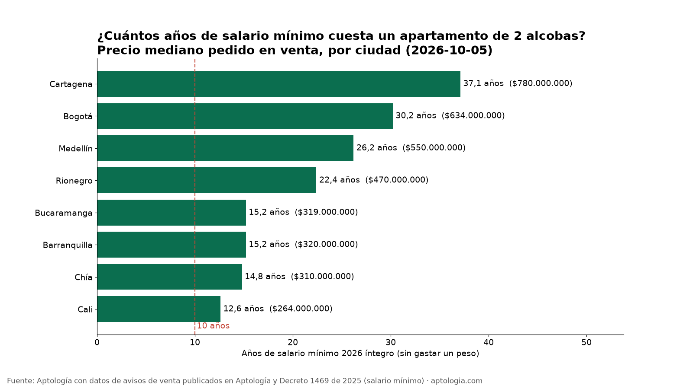
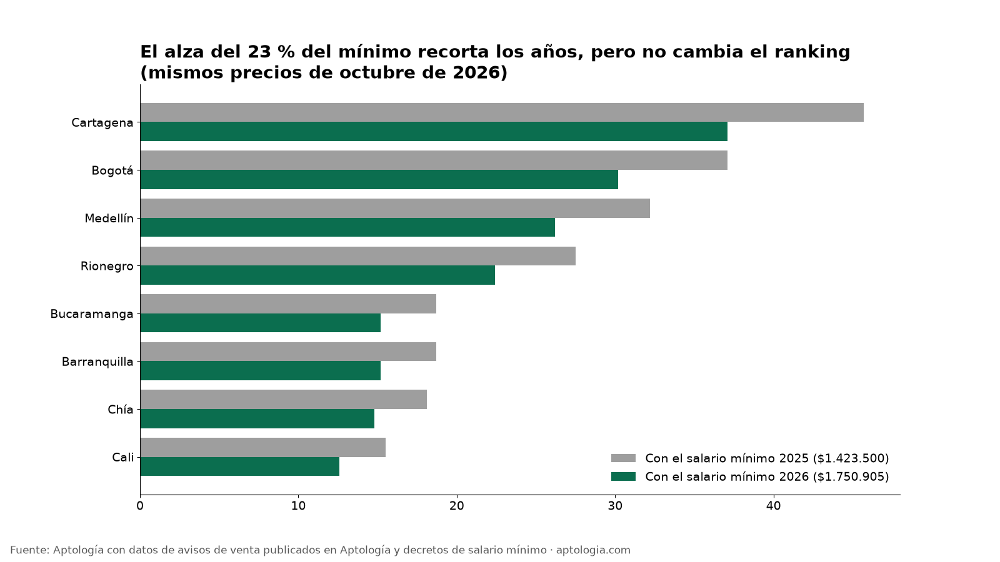
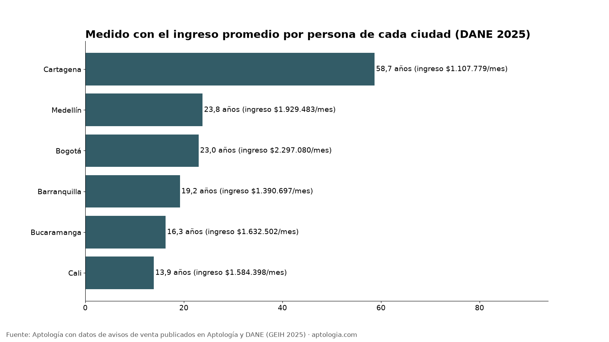

¿Cuántos años de salario mínimo cuesta un apartamento? Ranking por ciudad 2026
Estudio con datos abiertos (CC BY 4.0). Versión original: https://www.aptologia.com/estudios/anos-de-salario-minimo-para-comprar-apartamento
En Bogotá, un apartamento de 2 alcobas cuesta 30,2 años de salario mínimo íntegro: la mediana del precio pedido es $634 millones, según los avisos de venta de Aptología del 5 de octubre de 2026, y el salario mínimo de 2026 es $1.750.905 (Decreto 1469 de 2025). En Cartagena son 37,1 años y en Cali, la más barata de las ocho ciudades medidas, 12,6.
Resumen: en ninguna de las ocho ciudades con datos suficientes un apartamento de 2 alcobas cuesta menos de 10 años de salario mínimo. El alza del 23 % del mínimo en 2026 recortó entre 2,9 y 8,6 años, según la ciudad, pero no cambió el ranking.
Actualizado: 9 de octubre de 2026.
Precios pedidos, no de cierre. Las cifras de Aptología son medianas del precio que se pide en los avisos publicados el 5 de octubre de 2026, no lo que finalmente se paga ni se firma.

El ranking
| Ciudad | Precio mediano pedido, 2 alcobas (Aptología) | Años de salario mínimo 2026 | Años con el mínimo 2025 | Años de ingreso per cápita (DANE 2025) |
|---|---|---|---|---|
| Cartagena | $780.000.000 | 37,1 | 45,7 | 58,7 |
| Bogotá | $634.000.000 | 30,2 | 37,1 | 23,0 |
| Medellín | $550.000.000 | 26,2 | 32,2 | 23,8 |
| Rionegro | $470.000.000 | 22,4 | 27,5 | sin dato DANE |
| Barranquilla | $320.000.000 | 15,2 | 18,7 | 19,2 |
| Bucaramanga | $319.000.000 | 15,2 | 18,7 | 16,3 |
| Chía | $310.000.000 | 14,8 | 18,1 | sin dato DANE |
| Cali | $264.000.000 | 12,6 | 15,5 | 13,9 |
"Años de salario mínimo" significa el precio dividido entre 12 salarios mínimos, sin gastar un peso en nada más. Detalle completo en datos.csv.
Lo que dicen los datos
- Ninguna ciudad baja de 10 años. La hipótesis de partida era "más de 10 años en las ciudades caras". Los datos van más allá: las ocho ciudades superan los 10 años.
- Cartagena es la más cara medida en salarios mínimos, por encima de Bogotá. Su oferta en venta incluye mucha vivienda turística o de segunda residencia (ver limitaciones).
- Medida contra el ingreso real de cada ciudad, Cartagena empeora: el ingreso promedio por persona allí es de $1.107.779 al mes (DANE, 2025), así que el mismo apartamento cuesta 58,7 años de ese ingreso. En Bogotá, con un ingreso más alto ($2.297.080), son 23 años.
- La cuota inicial también es lejana: ahorrando el 30 % del salario mínimo, juntar una cuota inicial del 30 % de un 2 alcobas en Bogotá ($190,2 millones) toma 30,2 años.


Metodología
- Datos de Aptología: mediana del precio pedido en avisos de venta de apartamentos de 2 alcobas, por barrio (API abierta de Aptología, 5 de octubre de 2026, archivo
rentabilidad_arriendo_venta_barrio.csv). Para cada ciudad tomamos la mediana de esas medianas por barrio, ponderada por el número de avisos. Solo entran ciudades con al menos 300 avisos de venta de 2 alcobas: Cartagena, Bogotá, Medellín, Rionegro, Barranquilla, Bucaramanga, Chía y Cali. - Datos públicos: salario mínimo de 2026 ($1.750.905, Decreto 1469 de 2025, ratificado por el Decreto 159 de 2026) y de 2025 ($1.423.500). Ingreso per cápita de la unidad de gasto 2025 por ciudad capital (DANE, GEIH, anexo de pobreza monetaria, publicado el 12 de junio de 2026).
- Fórmula: años = precio ÷ (ingreso mensual × 12).
- Actualización:
actualizar.pyrelee el dataset de Aptología y el anexo del DANE y regeneradatos.csv,calculadora/precios_por_ciudad.jsony las gráficas. Cada enero hay que poner a mano el nuevo salario mínimo en el script.
Limitaciones
- Son precios pedidos en avisos, no precios de cierre ni avalúos, y mezclan vivienda nueva y usada.
- La mediana por ciudad se calcula a partir de las medianas por barrio, no de los avisos individuales. Además, solo cuenta barrios que también tienen avisos de arriendo.
- La oferta en portales sobrerrepresenta los segmentos medio y alto. El precio no es el de una vivienda VIS: el tope VIS se mide en salarios mínimos y no se compara aquí.
- El ingreso del DANE es un promedio por persona (no la mediana) de 2025, mientras que los precios son de 2026. Rionegro y Chía no tienen dato de ingreso del DANE.
- El cálculo no incluye intereses del crédito, gastos notariales ni subsidios.
Preguntas frecuentes
¿Cuántos salarios mínimos cuesta un apartamento en Bogotá? Un 2 alcobas tiene una mediana pedida de $634 millones, unos 362 salarios mínimos de 2026: 30,2 años de sueldo íntegro.
¿Cuánto cuesta un apartamento en Medellín en 2026? La mediana pedida para un 2 alcobas en los avisos de Aptología es $550 millones, unos 26 años de salario mínimo.
¿En qué ciudad es más barato comprar apartamento? De las ocho ciudades medidas, en Cali: $264 millones de mediana para un 2 alcobas, 12,6 años de salario mínimo.
¿Cuántos años debo ahorrar para la cuota inicial? Depende de su ingreso. Con el salario mínimo y ahorrando el 30 %, la cuota inicial del 30 % de un 2 alcobas en Bogotá toma 30,2 años. Haga su propio cálculo en la calculadora.
¿Cuántos años debo trabajar para comprar una casa? Con el salario mínimo de 2026 y sin gastar nada, entre 12,6 años (Cali) y 37,1 años (Cartagena) para un apartamento de 2 alcobas típico.
Demanda de búsqueda
Trends (2026-10-09): 'comprar apartamento' y 'cuanto cuesta un apartamento' dan ~0 frente a 'salario minimo', que tiene su pico en diciembre y enero. No aparece una query específica claramente mejor, así que se mantiene la principal. Conviene publicar o reactivar el estudio hacia el 28 de diciembre, con el decreto del nuevo mínimo, y agregar como secundarias 'comprar apartamento bogota' y 'subsidio de vivienda'. Comparación: Google Trends. Son valores relativos, sin volúmenes absolutos. El autocompletado de Google, consultado el mismo día, está en meta.json.
Cómo citar
Pinzón Pineda, D. M. (2026). ¿Cuántos años de salario mínimo cuesta un apartamento? Ranking por ciudad 2026. Aptología. Con datos de avisos de venta de Aptología, del DANE (GEIH) y del Decreto 1469 de 2025. https://www.aptologia.com/estudios/anos-de-salario-minimo-para-comprar-apartamento. Datos: datos.csv, licencia CC BY 4.0.